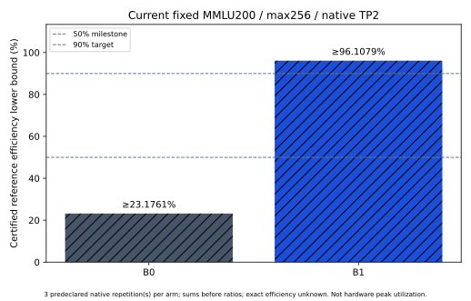

measured
原完整参考的算量、参考时间与每卡分母已独立复算，并通过同工况输入、权重、精度、双卡及预算核验；本轮必要F和原生同步T重新计算分子，再除以原参考每卡上界。两份F不相消，未沿用旧效率。
BF16 · TP2 · 固定200题 · 每题上限256 token · 每臂3轮 · EOS保留。以下时间来自纯原生同步区间，HTTP与分词在区间外。
| 运行臂 | 原生时间 (s) | 本轮必要算量区间 (FLOPs) | 原参考算量区间 (FLOPs) | 原参考时间下界 (s) | 每卡有效算力区间 (TFLOP/s) | 每卡参考算力上界 (TFLOP/s) | 效率下界 |
|---|---|---|---|---|---|---|---|
| B0 | 435.383008960 | [5412199042947080, 5441274927621803] | [5487388087149780, 5488258327989369] | ≥102.3231709195348958960064 | [6.2154, 6.2489] | ≤26.8183 | ≥23.1761% |
| B1 | 145.586148700 | [5412210332980554, 5441314537861173] | [5438115361780845, 5438638334450385] | ≥140.60316791316519 | [18.5876, 18.6877] | ≤19.3404 | ≥96.1079% |
B1里程碑50%：达成目标；后续90%目标：达成目标。
下界低于门槛表示当前证据未证明达标，不能据此判定未知的精确效率低于门槛。每臂保留全部预先声明的完整正式测量，算量和时间先求和再相除；不取最快轮，也不平均各轮效率。算量界与参考模型界不是统计置信区间。
C本轮下界=ΣF本轮下界/(2×ΣT本轮×10¹²)；C参考上界=ΣF原参考上界/(2×ΣT原参考下界×10¹²)；η下界=100×C本轮下界/C参考上界。保留两份原始算量及其各自时间，不消去不同F，不沿用旧效率，不表示硬件额定峰值利用率。
本目录追加参考认证，原性能批次的原件与统计口径保留。
